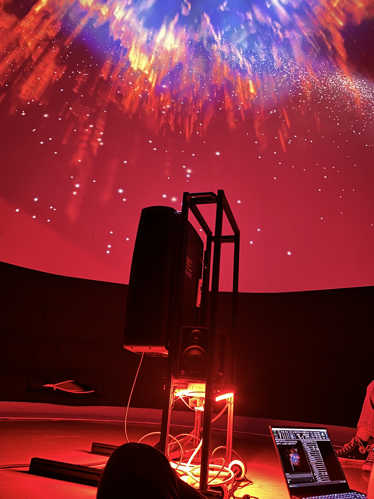
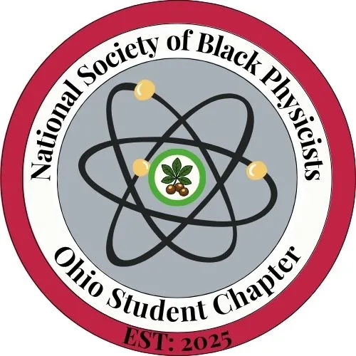

PLANETARIUM
Arne Slettebak Planetarium Presenter
USing the 30ft dome of the Arne Slettebak Planetarium i lead shows for audiences ranging from elementary schools to adults.
OUTREACH & COMMUNICATION

Science is most meaningful when it can be shared. I enjoy opportunities to communicate astronomy and astrophysics beyond the research community, making complex ideas accessible and engaging to wider audiences.
Through presentations, educational events, and public engagement, I hope to encourage curiosity about the universe and inspire others to explore the questions that drive scientific discovery.
SELECTED OUTREACH & ENGAGEMENT

USing the 30ft dome of the Arne Slettebak Planetarium i lead shows for audiences ranging from elementary schools to adults.

The NSBP student chapter was founded to provide a space for allies and people of color to convene share science and enjoy each others time. I lead the student chapter and set the mission and vision.